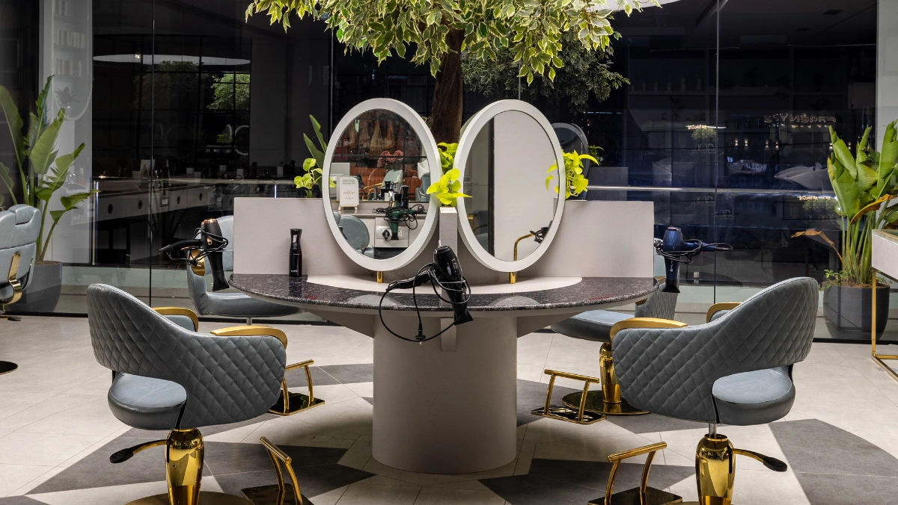

Many people visit a salon only before weddings, festivals, or special occasions. While occasional appointments can improve your appearance temporarily, regular salon visits can support healthy hair and glowing skin throughout the year. Just like routine maintenance, consistent professional care can help address concerns before they become more difficult to manage.
Professional hairstylists and beauty experts can help monitor the condition of your hair and skin while providing personalized treatments, expert advice, and suitable professional products. With consistent care, regular salon visits can become an important part of maintaining your appearance and confidence.
Hair and skin are constantly exposed to pollution, sunlight, dust, changing weather, stress, and daily styling. Over time, these factors can contribute to dryness, damage, dullness, and other concerns. Professional salon visits provide specialized care that complements your regular home routine. Beauty professionals can assess your needs and recommend treatments that are appropriate for your hair and skin.
Without regular maintenance and appropriate home care, these factors can gradually affect the appearance and condition of your hair and skin.
Professional treatments can help address these concerns and provide personalized recommendations for ongoing care.
Home care routines are important, but professional services can provide specialized techniques and products that complement your everyday routine. Regular appointments also give professionals an opportunity to adjust treatments according to seasonal changes, lifestyle, and your evolving hair and skin needs.
Routine services such as trims, hair spa treatments, deep conditioning, and scalp care can help maintain softness, reduce the appearance of damage, and keep your hair looking healthy and manageable.
Professional scalp treatments can help remove buildup and provide targeted care based on your scalp's individual needs.
Professional facials and skincare treatments can cleanse, hydrate, and nourish the skin, leaving it looking refreshed and radiant.
Experienced beauty professionals may notice signs of hair damage, scalp concerns, or skin concerns during regular appointments and can recommend appropriate professional care or suggest when specialist advice may be appropriate.
Every appointment provides an opportunity to receive recommendations about products, home care routines, styling techniques, and everyday habits that support healthy-looking hair and skin.
Professional salon care can be useful for:
Regular maintenance can be adapted to different ages, hair types, lifestyles, and beauty goals.
Consistent preventive care can make it easier to maintain your desired appearance rather than relying only on corrective treatments.
To keep your hair and skin looking healthy between salon appointments:
Small daily habits combined with professional care can help you maintain healthy-looking hair and skin over time.
Regular salon visits are about much more than beauty—they can be part of a long-term hair and skincare routine. Professional treatments, personalized advice, and consistent maintenance can help you care for your hair and skin while keeping your desired look fresh throughout the year.
By making salon visits a regular part of your self-care routine and following suitable home care practices between appointments, you can maintain hair and skin that looks healthy, refreshed, and well cared for.